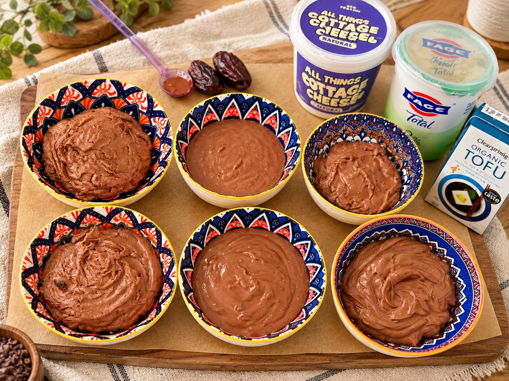
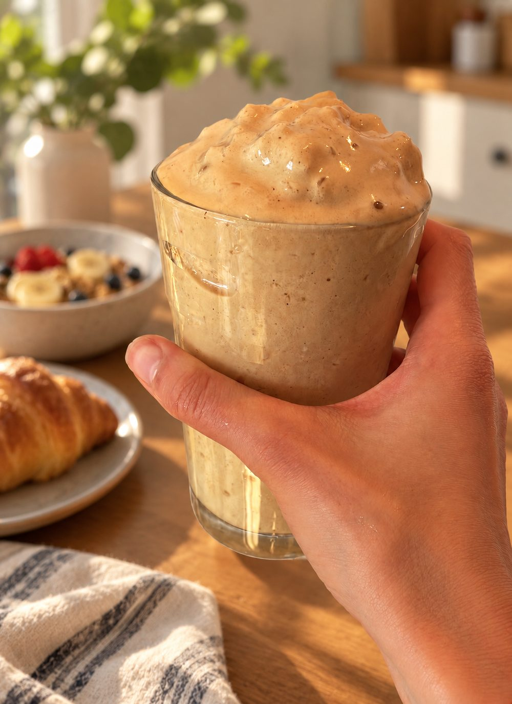
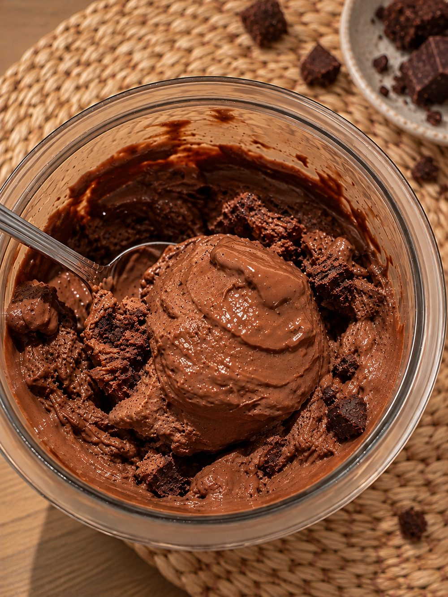
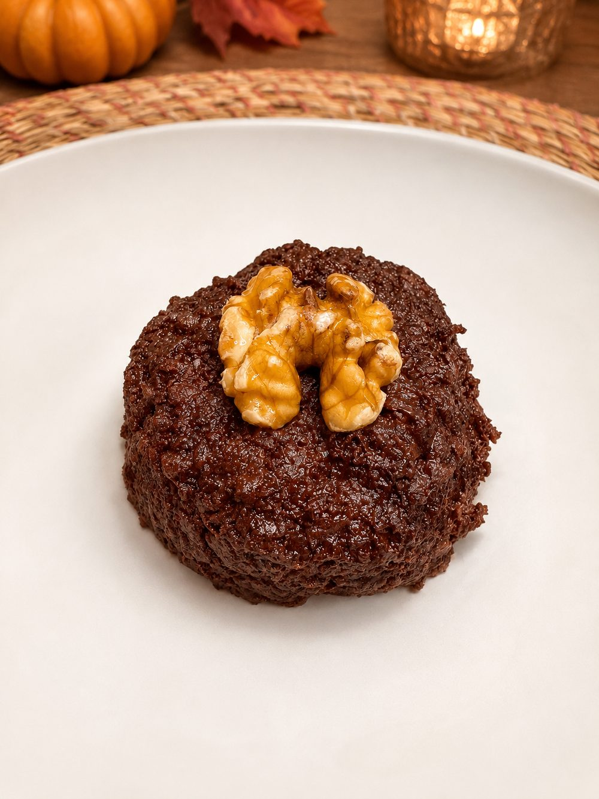

The Better Bite by Em
High-protein recipes that still taste like a treat.
Tap a photo for the recipe!
 Healthyish Ferrero Rocher Pie
Healthyish Ferrero Rocher Pie
I Tried 6 Healthy Chocolate Mousse Recipes Biscoff Banana Bread Pudding
Biscoff Banana Bread Pudding Chocolate Peanut Yogurt Bowl
Chocolate Peanut Yogurt Bowl Healthyish Marble Cake
Healthyish Marble Cake Chocolate Pistachio Truffles
Chocolate Pistachio Truffles Caramel Almond Crunch Bowl
Caramel Almond Crunch Bowl
Protein Coffee Frappuccino
Brownie Batter Ninja Creami Oreo Cheesecake Ninja Creami
Oreo Cheesecake Ninja Creami Blueberry Protein Froyo
Blueberry Protein Froyo Mango Cheesecake Protein Pot
Mango Cheesecake Protein Pot Pre-Run Protein Toast
Pre-Run Protein Toast Chocolate Apple Cups
Chocolate Apple Cups Viral Apple Salad
Viral Apple Salad
Apple Brownie for One Rice Paper Apple Pie
Rice Paper Apple Pie Apple Crumble Breakfast Oats
Apple Crumble Breakfast Oats